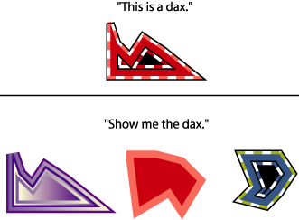

5 Hierarchical generalization
In previous examples, there was always a finite number of hypotheses that we were making inferences about (number of black balls, fair or trick coin, yellow or green taxi). Sometimes, we want to consider an infinite set of hypotheses. For example, after flipping a coin, what is the probability of that coin coming up heads? The answer to this question could be any number in the interval [0,1].
5.1 The Beta-Binomial model 🪙
We can answer this question with a model called the Beta-Binomial model, named for the probability distributions it uses. First, let’s set up the basic assumptions of the model.
Let \(P(\text{heads}) = \theta\). We don’t know what \(\theta\) is. After observing a sequence of coin flips \(D\), we want to estimate \(\theta\). This can be accomplished by directly applying Bayes’s rule:
\[ P(\theta|D) = \frac{P(D|\theta) P(\theta)}{P(D)} \]
The data \(D\) in this case corresponds to the number of \(k\) heads out of \(n\) total flips. This follows a Binomial distribution, which describes the probability of getting \(k\) successes out of \(n\) trials, when the probability of success on each trial is \(\theta\). We will define heads as a “success”.
\[ \begin{align} P(D|\theta) = P(k|\theta,n) &= \text{Bin}(k; n, \theta) \\ &= \binom{n}{k} \theta^{k} (1-\theta)^{n-k} \end{align} \]
The notation for the \(\text{Bin}(\cdot)\) function indicates that this is a distribution over \(k\) (number of successes) and the distribution has the parameters \(n\) (the total number of trials) and \(\theta\) (the probability of a success on each trial).
We can define the prior, \(P(\theta)\), however we like. Because \(\theta\) is a random variable that can take on any value from 0 to 1, we cannot just say \(P(\theta) = 0.5\) like we could in earlier examples. Instead, \(P(\theta)\) must be a probability distribution that assigns probabilities to any value from 0 to 1. If we know nothing about \(\theta\), we could use a Uniform(\([0,1]\)) or non-informative prior that assigns equal probability to all values of \(\theta\).
Alternatively, a convenient choice (for reasons explained below) for \(P(\theta)\) is the Beta distribution:
\[ P(\theta) = \text{Beta}(\theta;\alpha,\beta) \]
The Beta distribution has two parameters: \(\alpha > 0\) and \(\beta > 0\). Let’s create a function that will allow us to visualize the Beta distribution.
plot_beta takes two arguments: a (\(\alpha\)), and b(\(\beta\)) and plots a Beta distribution with those parameter values.
Let’s see what it looks like with a few different values.
When \(\alpha = \beta = 1\), the Beta distribution is identical to a Uniform(\([0,1]\)) distribution.
When \(\alpha\) and \(\beta\) are greater than 1 and equal, we get a distribution with a peak around 0.5. If we had strong prior expectations that the coin was unbiased, we could increase the parameters even more:
What about when \(\alpha\) and \(\beta\) are not equal?
This allows us to capture skewed priors, perhaps capturing a belief that the coin has a specific bias.
Now, what if \(\alpha\) and \(\beta\) are less than 1?
This might capture the belief that the coin is strongly biased, but we aren’t sure in which direction.
5.1.1 Conjugate distributions
The Beta distribution is the conjugate distribution for the Binomial distribution. This means that when the likelihood is a Binomial distribution and the prior is a Beta distribution, then the posterior is also a Beta distribution. Specifically, after making these assumptions,
\[ P(\theta|D) = \text{Beta}(\theta; \alpha + k, \beta + n-k) \]
The parameters of the posterior distribution are (1) the sum of \(\alpha\) from the prior and the number of observed heads and (2) the sum of \(\beta\) from the prior and the number of observed tails. This means that the parameters \(\alpha\) and \(\beta\) of the Beta prior have a natural interpretation as “virtual flips”. For example, the larger \(\alpha\) is compared to \(\beta\), the more biased toward heads we expect \(\theta\) to be. Additionally, the larger \(\alpha\) and \(\beta\) are, the more certain (less diffuse) the prior is.
5.1.2 Parameter estimation
Because we used a conjugate distribution, we can use our same plot_beta function to generate posterior probability distributions after some coin flips.
Suppose you start with a fairly strong belief that a coin is fair, represented by this distribution:
Now, suppose you flip a coin 20 times and it comes up heads every time. What should you think about the bias of the coin now? According to our model:
As you can see, this should cause you to shift your beliefs somewhat.
This wasn’t totally realistic, though. If you picked a coin off the ground, your prior beliefs about it being biased would probably look more like this:
What happens if you now flipped this coin 20 times and it came up heads every time?
You might be mildly surprised, but those 20 flips wouldn’t be enough to budge your estimate about the bias of the coin by much.
Finally, let’s imagine a situation in which you had a weak prior belief that a coin was biased:
Now you flip the coin 100 times and it comes up heads 48 times. What should your updated beliefs be?
As you can see, the posterior distribution shows that you should think this coin is probably fair now. This illustrates how sufficient evidence can override prior beliefs.
5.1.3 Hypothesis averaging
In Chapter 3, we solved the generalization problem by summing over all hypotheses, weighted by their posterior probabilities. Here, we can do something similar.
Suppose we want to know the probability of the next flip coming up heads. In other words, we want to know \(P(\text{heads}|D)\). We can do that by averaging over all possible values of \(\theta\):
\[ P(\text{heads}|D) = \int_\theta P(\text{heads}|\theta) \cdot P(\theta|D) d\theta = \int_\theta \theta \cdot P(\theta|D) d\theta \]
5.2 Overhypotheses 🙆
Now consider a slightly different situation. You flip 19 different coins in a row, each one time, and they all come up heads. Now you pick up a 20th coin from the same bag as the previous 19 coins. What do you think is the probability of that 20th coin coming up heads? Is it higher than 0.5?
If you answered yes, it’s probably because you formed an overhypothesis about the bias of the coins. After flipping all those coins, you may have concluded that this particular set of coins is more likely than usual to be biased. As a result, your estimate about the probability of the 20th coin coming up heads was higher than it otherwise would be.
5.2.1 The shape bias
This coins example is pretty artificial, but the concept of overhypotheses is one that you find in language learning. A phenomenon known as the shape bias refers to the fact that even young children are more likely to generalize a new word based on its shape rather than other properties like color or texture.

This makes sense because objects tend to have common shapes and are less likely to have common colors or textures.
5.2.2 Modeling the learning of overhypotheses through hierarchical Bayesian learning
Charles Kemp, Andy Perfors, and Josh Tenenbaum developed a model of this kind of learning. They focused on bags of black and white marbles rather than flipping coins. They imagine a problem in which you have many bags of marbles that you draw from. After drawing from many bags, you draw a single marble from a new bag and make a prediction about the proportion of black and white marbles in that bag.
The details of the model are outside the scope of this book. But the basic idea is that the model learns at two levels simultaneously. At the higher level, the model learns the parameters \(\alpha\) and \(\beta\) of a Beta distribution that characterizes the proportion of black and white marbles in each bag. As we saw above, a Beta distribution can have a peak around a particular proportion, or it can be peaked around both 0 and 1, meaning that each bag is likely to be nearly all black or all white.
At the lower level, the model learns the specific distribution of marbles within a bag. If you draw 20 marbles and 5 of them are black, you may have some uncertainty about the overall proportion in the bag, but your best estimate will be around 5/20 (or 1/4).
Where the model excels is being able to draw inferences across bags. If you see many bags that are full of only black or only white marbles, and then you draw a single black marble out of a new bag, you are likely to be very confident that the rest of the marbles in that bag are black.
But if you see many bags that have mixed proportions of black and white marbles, and then you draw a single black marble out of a new bag, you will be far less confident about the proportion of black marbles in that bag. A model that doesn’t make inferences at multiple levels would struggle to draw this distinction.